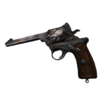
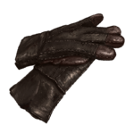
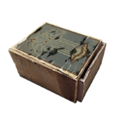

CHARACTERS
Read about the various characters that drive the plot in Pathologic.
| Factions | ||
|---|---|---|
| UTOPIANS |  |
The Utopians are a faction of individuals in the game. They believe in the advancement of humanity above everything else. They want to preserve the Polyhedron, a miraculous tower that can contain a human soul and transcend the mind past our current limits. The Bachelor is aligned with this faction. It supports his forward view of humanity and the unique attributes of the tower can create a basis for the curing of death. |
| TERMITES |  |
The Termites are a faction that support the survival of the town and its people above all else. They do not care for the Polyhedron and are willing to sacrifice it in order to save the town. The Haruspex is aligned with this faction. He feels a sacred duty to his people and is willing to sacrifice anything it takes in order to save his town and his people. |
| HUMBLES |  |
The Humbles are a faction of criminals and losers. However, they are willing to sacrifice themselves to put an end to the pandemic. The Changeling is aligned with this faction. Her miraculous powers allow her to let these people use their lives in order to end the pandemic. |